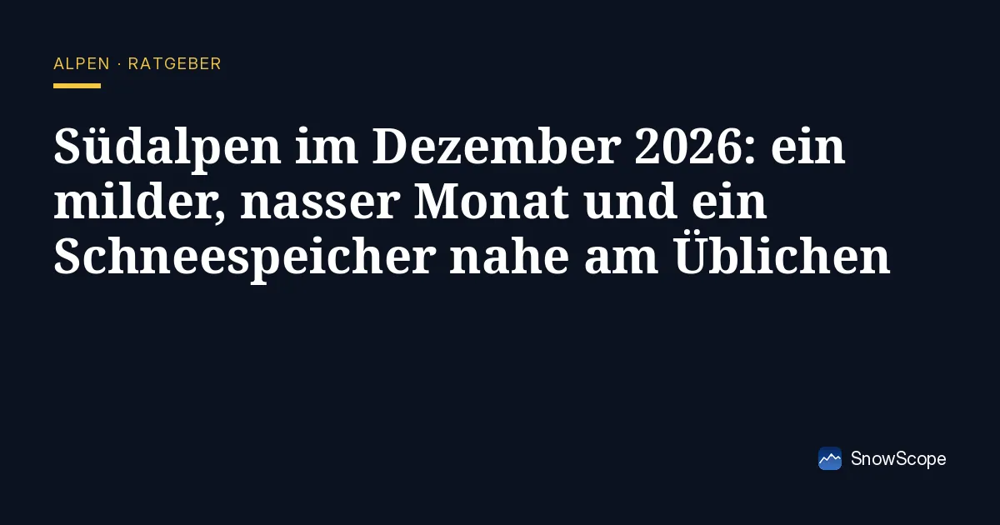

Südalpen im Dezember 2026: ein milder, nasser Monat und ein Schneespeicher nahe am Üblichen
Dezemberschnee ist Wasser, das in den Bergen für die Frühjahrschmelze gespeichert wird. Die Südalpen erleben einen wärmeren, nasseren Monat, doch die Schneehöhe am 31. Dezember soll nahe ihrem üblichen Niveau bleiben. Der Großteil des Gebirges zeigt kein klares Muster; nur der französische Westerrand neigt zu Trockenheit.
Die Live-Schneeprognose für Southern Alps in der SnowScope-AppSchneehöhen, Pulverschnee-Alarme und 3D-Karte, gratis.

Kein Signal über die meisten Bereiche hinweg
Wenn wir jeden 10-km-Fleck des Gebirges mit seinen eigenen vergangenen 45 Dezembern vergleichen, zeigen vier von fünf Gebieten – von Briançon bis Sestriere und hinunter nach Cuneo – keine Neigung in die eine oder andere Richtung. Der westliche Rand bei Grenoble und die französischen Täler darüber hinaus neigen zu Trockenheit, aber nirgends neigt es zu mehr Schnee.
Die Wahrscheinlichkeit eines nasseren Dezember als üblich reicht von 31 % bis 55 % in der gesamten Region, mit einem Median von 45 %. Diese Streuung spiegelt die Komplexität der Südalpen wider: Ein paar Täler können zusätzlichen Schnee abbekommen, während andere knapp bleiben.
Wärme treibt die Vorhersage an; Regen fällt tiefer
Die 51 Vorhersagen des Europäischen Wetterzentrums sind sich in einem Punkt beinahe einig: 88 % von ihnen sagen einen Dezember voraus, der 1,7 °C wärmer als der übliche Mittelwert ist. Diese Wärme ist der zuverlässigste Teil dieser Aussicht. Der Niederschlag steigt auch – 14 % über den normalen 101 mm – und 61 % der Läufe sind nasser als im Durchschnitt.
Für die Schneespeicherung zählt der Kompromiss. Warme Luft und feuchter Mittelmeerfluss bedeuten, dass hohe Gipfel Schnee abbekommen, während tiefere Hänge und Pässe Regen sehen. Die Schneehöhe hängt von diesem Gleichgewicht ab. Das Ergebnis: Tiefen zum Jahresende bleiben nahe dem, was vergangene Dezember hinterlassen haben.


Französische Seite: 61 cm am 31. Dezember
Die Französischen Südalpen (Serre-Chevalier, Vars und Risoul, Orcières, Valberg, Dévoluy) erleben einen Dezember mit 1,5 °C über Normal und Niederschlag 8 % höher als üblich. Die Aussicht auf Neuschnee liegt bei 44 cm, leicht unter dem typischen 48 cm, den die vergangenen 45 Jahre gebracht haben.
Am 31. Dezember liegt die Vorhersage-Tiefe bei 61 cm. Das entspricht dem üblichen 62 cm fast genau. Drei vergangene Dezember – 2023, 2022 und 2018 – passen diesem Vorhersage-Muster am meisten. Die Spanne wahrscheinlicher Tiefen reicht von 49 cm bis 85 cm, also plane für typische Frühjahrs-Bedingungen.
Italienische Seite: stabil bei 64 cm
Jenseits der Grenze im Aostatal und Piemont (Courmayeur, Sestriere, Monterosa, Pila) wird der Dezember 1,4 °C wärmer als normal sein, mit Niederschlag 7 % über dem vergangenen Durchschnitt. Die Aussicht hält Neuschnee bei 43 cm, gleich wie ein typischer Dezember.
Am 31. Dezember werden Tiefen bei 64 cm prognostiziert, wieder dem 45-Jahre-Normal entsprechend. Die Hälfte der Vorhersage-Mitglieder zeigt tieferen Schnee als üblich, die Hälfte flacher. Die nächsten Analoga sind wieder 2023, 2018 und 2022. Skifahrer auf der italienischen Seite sollten eher mit mittleren Bedingungen als mit Extremen rechnen.
Was diese Vorhersage für deine Reise bedeutet
Eine Vorhersage nahe Normal ist beruhigend, aber nicht inspirierend. Sie sagt: Buche deine Dezember-Reise ohne Angst vor Schneemangel, aber erwarte keinen Superlativ-Monat. Die prognostizierte Wärme ist das Signal, dem wir am meisten vertrauen, also zielen auf hochalpine Hänge und nordseitige Terrain in Anfang Dezember ab, wo kalte Luft verweilt.
Eine Vorhersage wie diese kann einzelne Stürme nicht vorhersagen. Wenn ein Mittelmeer-Tief in der 7-Tage-Vorhersage erscheint, können die Südalpen in ein oder zwei Tagen erheblichen Schnee speichern. Anfang Dezember ist typischerweise ruhiger; achte auf Stürme ab Mitte des Monats. Vergleiche einzelne Skigebiete auf der SnowScope-Karte – die Schneehöhe unterscheidet sich stark von Tal zu Tal.
Tipps für Skifahrer
- Ziele auf die höchsten Lifte und nordseitige Hänge in Anfang Dezember, wenn die Luft am kältesten ist und Regen in der Höhe am wenigsten wahrscheinlich ist.
- Überprüfe wöchentlich die 7-Tage-Vorhersage auf Mittelmeer-Tiefs: Sie liefern den meisten Dezember-Schnee zu dieser Region in kurzen Schüben.
- Stöbere vor der Buchung auf der SnowScope-Karte, welches Tal mehr Schnee hält; der Unterschied zwischen Nachbar-Skigebieten kann 20–30 cm sein.
- Wenn Neuschnee fällt, ziele innerhalb von Stunden auf obere Hänge; wärmere Tage können frühen Schnee schnell aufweichen oder schmelzen.
- Packe Schichten und eine Regenjacke: Der Dezember bringt so viel Wasser wie Schnee, und die Grenze zwischen den beiden verschiebt sich mit der Höhe und der Tageszeit.
Zu diesen Zahlen
Die Schneehöhen der Skigebiete sind der meiste Schnee in den oberen Hängen am angegebenen Tag; es sind Schätzungen für eine Fläche, keine Messung an einem Punkt. Prognosen können sich ändern. Lies vor dem Freeriden immer den offiziellen Lawinenlagebericht.
Diesen Bericht zitieren
Für Forschung, Lehre oder Presse: Zahlen und Grafiken sind unter CC BY 4.0 mit dieser Quellenangabe frei nutzbar.
SnowScope (2026), Südalpen im Dezember 2026: ein milder, nasser Monat und ein Schneespeicher nahe am Üblichen, https://snowscope.app/blog/de/2026/11/southern-alps-december-2026-snow-outlook.html, abgerufen am 2026-11-10
SnowScope (Atlas Labs). (2026, November 10). Südalpen im Dezember 2026: ein milder, nasser Monat und ein Schneespeicher nahe am Üblichen. SnowScope snow reports. https://snowscope.app/blog/de/2026/11/southern-alps-december-2026-snow-outlook.html
BibTeX
@misc{snowscope2026southernalpsdecember2026,
author = {{SnowScope (Atlas Labs)}},
title = {Südalpen im Dezember 2026: ein milder, nasser Monat und ein Schneespeicher nahe am Üblichen},
year = {2026},
month = nov,
howpublished = {\url{https://snowscope.app/blog/de/2026/11/southern-alps-december-2026-snow-outlook.html}},
note = {Published 2026-11-10 09:31 UTC; accessed 2026-11-10}
}· CC BY 4.0 · Methoden, Daten und Werkzeuge →
Southern Alps folgen
Gratis: eine Nachricht, wenn Neuschnee kommt, und jeden Morgen die Vorhersage.
Weitere Schneeberichte

Ist Verbier etwas für Anfänger? Wann ist der Schnee am besten? Wie kommt man hin? Antworten zu den 4 Vallées und 46 vergangenen Wintern.

Die Sellaronda ab Wolkenstein (Sëlva) in Gröden: Grödner Joch, Campolongo, Pordoi und Sellajoch der Reihe nach, mit unserer Schneehistorie von 46 vergangenen Wintern.

Chantarella, Marguns, Piz Nair, White Turf: die Wörter, die man in St. Moritz hört, erklärt, und was 46 vergangene Winter unserer Schneehistorie zu jeder Höhe der Corviglia sagen.